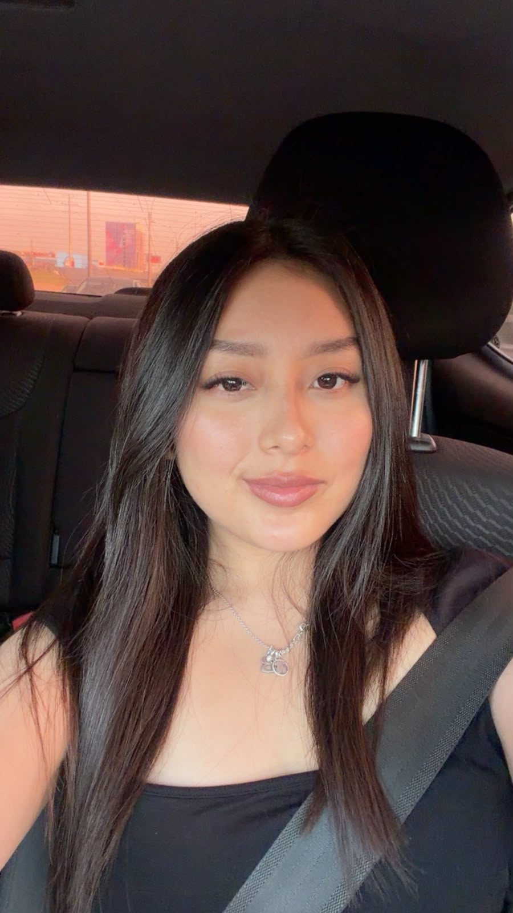
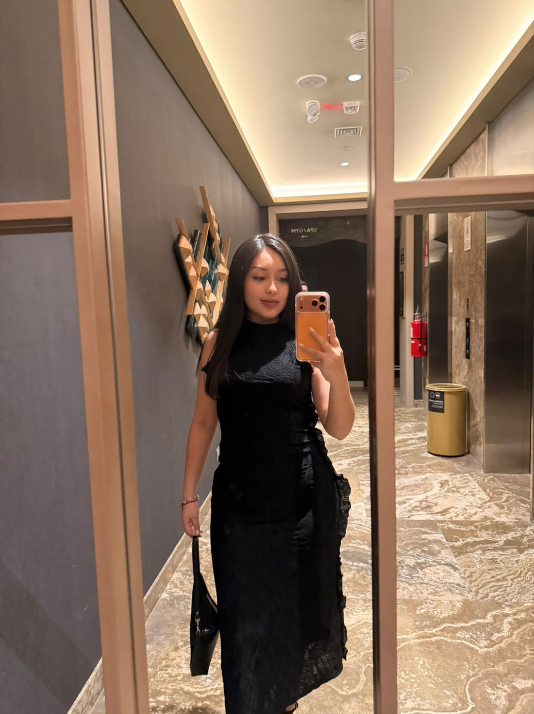

Universidad
Científica del Sur
Mi casa de estudios.
LEE GRANDE
Estudiante de Derecho en la Universidad Científica del Sur. Estoy cursando el décimo ciclo y aquí comparto un poquito sobre mí y mi etapa universitaria.


¡Hola! Mi nombre es Bada Francesca Lee Grande y estudio la carrera de Derecho en la Universidad Científica del Sur.
Actualmente estoy en el décimo ciclo, una etapa en la que sigo aprendiendo, descubriendo nuevos temas y preparándome para mi futuro profesional.
Creé esta página como parte de mi curso de Legal Tech, para presentarme de una forma diferente y poner en práctica lo aprendido sobre herramientas digitales.
Tres datos que resumen la etapa en la que me encuentro.
Mi casa de estudios.
La carrera que estoy estudiando.
Continuando mi formación profesional.
Esta página forma parte del curso Legal Tech. Es una oportunidad para explorar cómo la tecnología también puede acompañar nuestra formación en Derecho.
También quise darle a este espacio un toque personal. Para mí, esta página no es solo una tarea: es una pequeña presentación de quién soy y de la etapa que estoy viviendo.
con cariño, Bada ♡Este es mi espacio personal para el curso de Legal Tech. Puedes ver el proyecto en GitHub o compartir esta página.